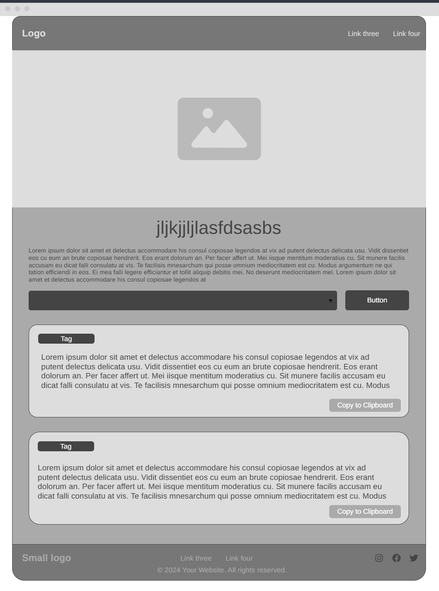
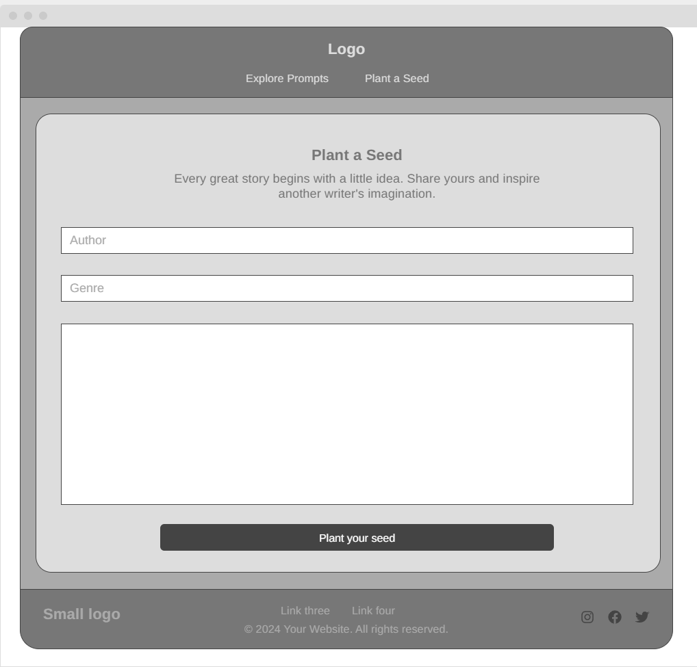

Overview
Purpose
This will be a website to help get rid of writer's block or even to help the user get started into writing. It will provide prompts of different genres, that the user can filter through by genre. It will also have a page that the user can submit a prompt. Right now, it will just show verification of submission until a database is set up. Later on, a feature to favorite or save prompts.
Audience
The audience will be writers of all ages. Everyone get's stuck somtimes or needs new ideas, this will be the starting point to that.
Dynamic elements
On the main page, users will be able to select a genre (fantasy, romance, mystery, etc...) and the website will dynamically display writing prompts that match their selection. There will also be a random prompt generator button that will pull a prompt from any genre. On the second page, there will be a form that the user can use to submit their writing prompt. It will use validation to validate the user's input and show a confirmation message.
Branding
Website Logo
Website Favicon
Style Guide
Color Palette
Palette URL: https://coolors.co/303b32-c4a46b-f5efe3-71816d| Primary | Secondary | Accent 1 | Accent 2 |
|---|---|---|---|
| [#303B32] | [#F5EFE3] | [#71816D] | [#C4A46B] |
Pseudocode for your project
Main After creating the layout in HTML and CSS, I'll create an array of objects to hold the information for each prompt. I will also create an empty HTML container where I can dynamically display the prompts using innerHTML. I'll add a dropdown menu with the different genres that correspond to the genre of each prompt. Then I'll create a function to display the prompts and use an onchange event listener and the filter array method to display the prompts that match the selected genre. I will also create a random prompt button and a function that randomly selects a prompt from the entire array, regardless of genre. Page 2 For page 2, I will create a form that allows users to create their own writing prompts. I'll create functions to verify the inputs and only allow them to submit once the requirements are met (a genre must be selected and the prompt must contain at least 50 characters). If the requirements aren't met, an error message will be displayed. Once the form is successfully completed, a confirmation message will be displayed and the form will be reset.
Wireframes
Create wireframes for your project page(s). One for each page and list them here.
Landing page
The amount of listed forms will change upon the returned items when you choose a genre.

Page 2
It will also show confirmation information when you submit a prompt.
